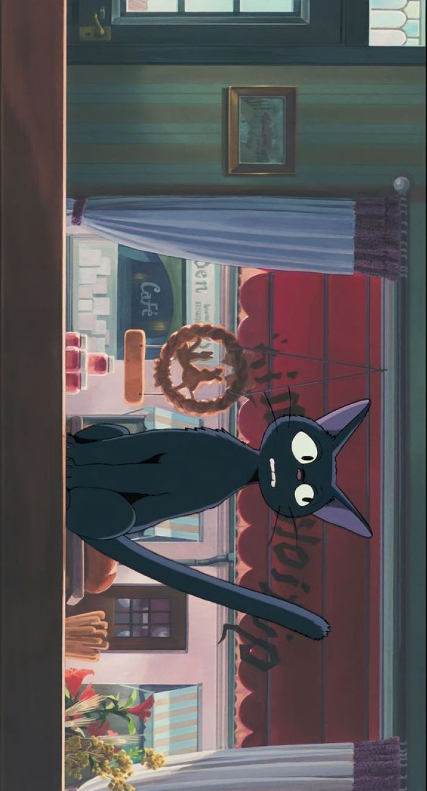
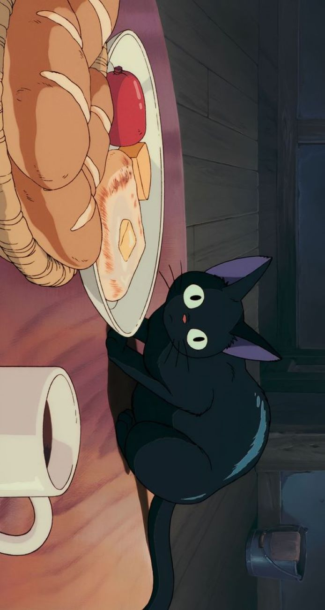
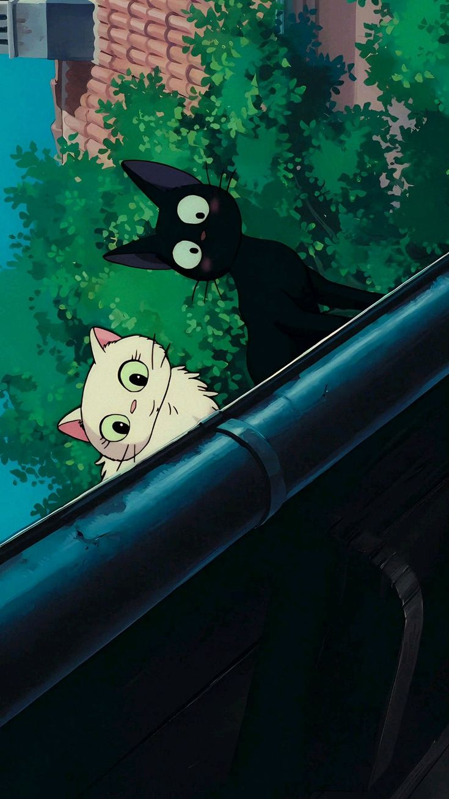

Hello and welcome to my website! I'm delighted to have you here. Feel free to look and learn something new about me. Dive into my journey., explore my passions, and discover the stories behind the scenes.
,

FARADAY
ABOUT ME
BERNADETTE PANGILINAN
Hello, my name is Bernadette P. Pangilinan, and I'm delighted to welcome you to my website! I was born on November 16, 2005, making me 18 years old. I call Mandile, San Miguel, Bulacan, my home, where I've lived for as long as I can remember. I completed my elementary education at Mandile Elementary School, graduating as the class salutatorian. Since then, I've been fortunate to maintain a consistent record of academic excellence, earning honors every year, including now as a senior high school student. Currently, I'm in grade 12, pursuing the STEM strand at San Miguel National High School. Initially, I had my heart set on becoming a Civil Engineer, but my General Physics score and my Pre-Calculus grade in grade 11 made me reconsider my path. As a result, I've decided to pursue a career in Medical Technology instead. While I may not particularly enjoy math and science, I find myself drawn to courses related to these subjects, which is why I've chosen to pursue a career in a field that intersects with my interests.
,

FARADAY
MY LIKES
BERNADETTE PANGILINAN
I enjoy spending most of my time at home, but I also love hanging out with my friends. Experimenting with cooking, especially when it comes to making desserts, brings me joy. Playing volleyball and badminton is something I always look forward to during my free time. I'm really passionate about my studies, and I always strive to do my best to avoid any regrets. Reading books, whether they're physical copies or from Wattpad, is a favorite pastime of mine. Listening to music lifts my spirits and gives me energy. When I'm feeling down, watching movies has become my go-to comfort.
,

FARADAY
RANDOM FACTS
BERNADETTE PANGILINAN
I can play the lyre and ukulele. Additionally, I understand a bit of Kapampangan because it's the language spoken by the elderly at home. Crocheting and solving Sudoku puzzles are hobbies I enjoy. I learned to solve a Rubik's Cube just by following the instructions on the box. Traveling to different places is something I love to do. On days with lots of free time, I can finish reading 2-3 books. Loud noise from people annoys me, but loud noise from the surroundings calms me and makes me feel sleepy. I dislike eating soup in the afternoon, and although I'm not a fan of vegetables, I love pumpkin and potato. My favorite book is called "A Gentle Reminder." I adore the colors purple and green, and I have a fondness for rainy days.